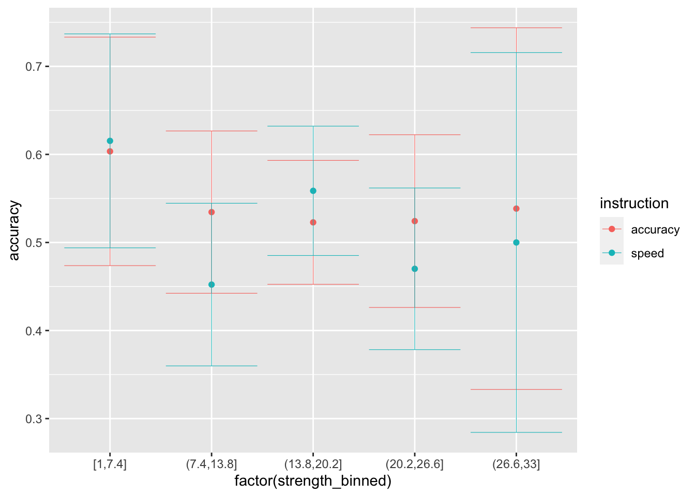
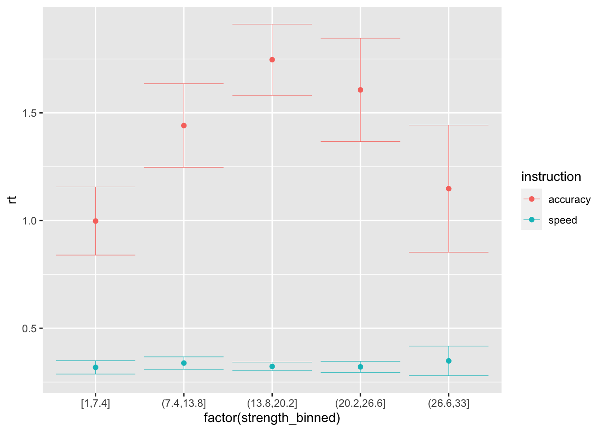
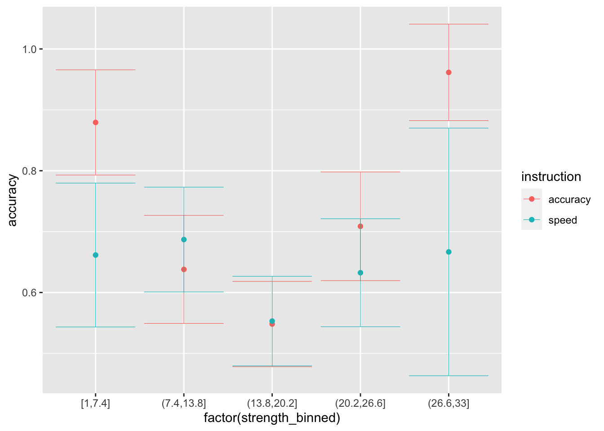

Group project for the CMAH 2021
In this project we will analyze the data from the first experiment of Ratcliff and Rouder (1998).
Day 1. Understanding and visualizing the data
First, let’s clear our workspace and load a few packages:
rm(list = ls())
library(rtdists)
library(tidyverse)In this experiment, participants made brightness discriminations (high vs. low) of different pixel arrays. The proportion of dark to white pixels (or the brightness level) was sampled in each trial from one of two different overlapping distributions, with different mean and equal SD (dark vs light) and was then discretized in steps of 33 (so that there were only 33 possible brightness levels in the experiment).
The correct response was to match the distribution from which the brightness level was sampled from (labeled “source” in the dataset). Therefore, the noise in participants’ responses could come both from:
- noise in the stimulus (since the 2 distributions were overlapping)
- noise in the perception.
There were 2 main manipulations:
- instructions in each block could bring more emphasis on either speed or accuracy
- the brightness level (labelled “strenght” in the dataset).
We can find the data already in the rtdists package:
data(rr98) # load data
rr98 <- rr98[!rr98$outlier,] # remove outliers, as in original paper
rr98 <- rr98[rr98$block <= 8,] # keep only the first 8 sessions
rr98[,'accuracy'] = 0 # add a new column labelled as accuracy, where incorrect responses are coded as 0
rr98[rr98$correct, 'accuracy'] = 1 # and correct responses are coded as 1
head(rr98)## id session block trial instruction source strength response response_num
## 1 jf 2 1 21 accuracy dark 8 dark 1
## 2 jf 2 1 22 accuracy dark 7 dark 1
## 3 jf 2 1 23 accuracy light 19 light 2
## 4 jf 2 1 24 accuracy dark 21 light 2
## 5 jf 2 1 25 accuracy light 19 dark 1
## 6 jf 2 1 26 accuracy dark 10 dark 1
## correct rt outlier accuracy
## 1 TRUE 0.801 FALSE 1
## 2 TRUE 0.680 FALSE 1
## 3 TRUE 0.694 FALSE 1
## 4 FALSE 0.582 FALSE 0
## 5 FALSE 0.925 FALSE 0
## 6 TRUE 0.605 FALSE 1In the dataset there are 3 participants, who completed ~ 3800 trials in each condition (speed/accuracy), separated in 8 sessions.
Exercises:
- A First, let’s focus on the instruction manipulation. Using the summarise function of the tidiverse package combined with the group_by function, calculate the average performance (both RTs and accuracy) per subject and instruction level. What do you observe?
Possible answer:
summarise(group_by(rr98,
id,
instruction),
n = n(),
mean_rt = mean(rt),
mean_accuracy = mean(accuracy))## # A tibble: 6 x 5
## # Groups: id [3]
## id instruction n mean_rt mean_accuracy
## <fct> <fct> <int> <dbl> <dbl>
## 1 jf speed 3909 0.325 0.688
## 2 jf accuracy 3826 0.738 0.727
## 3 kr speed 3796 0.311 0.692
## 4 kr accuracy 3785 0.758 0.724
## 5 nh speed 3941 0.365 0.719
## 6 nh accuracy 3785 0.613 0.734- B Then, let’s focus on the brightness level manipulation. Using the stats_summary function in ggplot, plot participants’ average performance, separately per strength, instruction level and participant (preferabily using point plots with error bars). What do you observe?
Possible answer:
ggplot(data = rr98, mapping = aes(x = factor(strength), y = rt, color=instruction)) +
stat_summary(fun = "mean", geom="point") +
stat_summary(fun.data = mean_cl_normal, geom = "errorbar", size=.2, width=.9) +
facet_grid(rows=vars(id))ggplot(data = rr98, mapping = aes(x = factor(strength), y = accuracy, color=instruction)) +
stat_summary(fun = "mean", geom="point") +
stat_summary(fun.data = mean_cl_normal, geom = "errorbar", size=.2, width=.9) +
facet_grid(rows=vars(id))- C Finally, let’s focus on the effects of the session on average performance. Using the stats_summary function in ggplot, plot participants’ average performance, separately per session, instruction level and participant (preferabily using point plots with error bars). What do you observe?
Possible answer:
ggplot(data = rr98, mapping = aes(x = factor(block), y = rt, color=instruction)) +
stat_summary(fun = "mean", geom="point") +
stat_summary(fun.data = mean_cl_normal, geom = "errorbar", size=.2, width=.9) +
facet_grid(rows=vars(id))ggplot(data = rr98, mapping = aes(x = factor(block), y = accuracy, color=instruction)) +
stat_summary(fun = "mean", geom="point") +
stat_summary(fun.data = mean_cl_normal, geom = "errorbar", size=.2, width=.9) +
facet_grid(rows=vars(id))- D Add a new column to the dataset called
strength_binned, in which the brightness levels are grouped into bins of equal lenght (similarly to the original paper). The idea is to have bins of brightness level with similar performance, to reduce noise in the data and to later be able to fit separate drift-rates per brightness level (33 would be a lot of drift-rates to fit).
While the average is a good summary statistic for accuracy (since it’s a binary variable), when we inspect response times the average is not enough. Infact, typical response times distributions are not Gaussian, but more similar to an Inverse Gaussian. Therefore, we typically inspect quantiles rather than just the average. Moreover, it can be that the response times distribution differ for different options. Therefore, we typically want to inspect RT distributions separately per choice (in this case, light vs. dark).
Possible answer:
rr98$strength_binned <- cut(rr98$strength,
breaks = seq(min(rr98$strength), max(rr98$strength), length.out=6),
include.lowest = TRUE)- E Plot the RT as histograms, separately per participant (as row in the grid), instruction (as color filling), and as strenght bin (as column in the grid). What do you notice about the general shape of the distributions?
Possible answer:
ggplot(data = rr98, mapping = aes(x = rt, fill = instruction)) +
geom_histogram(binwidth=.1, alpha = .3, position="identity") +
facet_grid(rows=vars(id), cols=vars(strength_binned))- F Plot the .1, .3, .5, .7, .9 RT quantiles (y-axis), separately per strenght bin (x-axis), participant (as rows in the grid), and choice (as column in the grid). To make it more “readable”, plot the 2 instructions separately. What is the main difference between the 2 instruction conditions?
Possible answer:
ggplot(data = rr98[rr98$instruction=="speed",], mapping = aes(x = strength_binned, y=rt)) +
stat_summary(aes(group=1), fun=median, geom="line", size=.8, color="coral4") +
stat_summary(aes(group=1), fun=function(x) quantile(x, .1), geom="line", size=.2, color="coral") +
stat_summary(aes(group=1), fun=function(x) quantile(x, .3), geom="line", size=.5, color="coral3") +
stat_summary(aes(group=1), fun=function(x) quantile(x, .7), geom="line", size=.5, color="coral3") +
stat_summary(aes(group=1), fun=function(x) quantile(x, .9), geom="line", size=.2, color="coral") +
facet_grid(rows=vars(id), cols=vars(correct)) +
labs(title="Speed emphasized") +
theme(plot.title = element_text(hjust = 0.5))ggplot(data = rr98[rr98$instruction=="accuracy",], mapping = aes(x = strength_binned, y=rt)) +
stat_summary(aes(group=1), fun=median, geom="line", size=.8, color="coral4") +
stat_summary(aes(group=1), fun=function(x) quantile(x, .1), geom="line", size=.2, color="coral") +
stat_summary(aes(group=1), fun=function(x) quantile(x, .3), geom="line", size=.5, color="coral3") +
stat_summary(aes(group=1), fun=function(x) quantile(x, .7), geom="line", size=.5, color="coral3") +
stat_summary(aes(group=1), fun=function(x) quantile(x, .9), geom="line", size=.2, color="coral") +
facet_grid(rows=vars(id), cols=vars(correct)) +
labs(title="Accuracy emphasized") +
theme(plot.title = element_text(hjust = 0.5))Day 2. Setting up the model: Simulating data
When fitting this data set, it is necessary to vary some of the DDM parameters across the manipulations. First of all, the brightness manipulation is most likely affecting the rate of evidence accumulation: the lower the brightness, the more “dark” decisions are made and the higher the brightness level, the more “light” decisions are made. The drift should be around 0 around the point in which the 2 underlying distributions mostly overlap, causing the performance to become worse (slower/less accurate).
Secondly, the instruction is most likely affecting the threshold: when speed is stressed, decisions are faster and less accurate (lower threshold) and when accuracy is stressed, decisions are slower and more accurate (higher threshold).
Therefore, we would like to set up a model with:
- varying drift-rates based on brightness
- saparate thresholds based on the instruction (speed/accuracy)
Regarding varying the drift-rates we have multiple options:
- fitting separate drift-rates per
strength_binned(as many parameters as the bins) - fitting a model that maps
strenghtto the drift-rate, such asdrift = A + strength*B(2 free parameters)
I suggest the second one, since it is closer to what we would consider a process model, because it maps stimulus properties directly to cognitive processes, represented by the model’s parameters.
We can start from simulating a “fake” dataset, that resembles the one used in the original experiment:
library(truncnorm) # install first if not already: install.packages("truncnorm")
# simulate the stimuli
create_stimuli <- function(n_trials, mean_1=12.375, mean_2=20.625, sd=6.1875) {
dist1 <- as.integer(rtruncnorm(n_trials, a=1, b=34, mean=mean_1, sd=sd)) # dark distribution
dist2 <- as.integer(rtruncnorm(n_trials, a=1, b=34, mean=mean_2, sd=sd)) # light distribution
source <- sample(c("light", "dark"), n_trials, replace = TRUE) # sample from one of them
stimuli <- data.frame(dist1=dist1, dist2=dist2, source=source)
# add strength corresponding to the source distribution
stimuli$strength <- dist1
stimuli[stimuli$source == "light", "strength"] <- stimuli[stimuli$source == "light", "dist2"]
# add speed/accuracy manipulation
stimuli$instruction = rep(c("speed", "accuracy"), each=n_trials/2)
# separate strength in bins (based on what you did in Day 1)
stimuli$strength_binned <- cut(stimuli$strength,
breaks = seq(min(stimuli$strength), max(stimuli$strength), length.out=6),
include.lowest = TRUE)
# transform into factors
stimuli$instruction = as.factor(stimuli$instruction)
stimuli$strength = as.factor(stimuli$strength)
stimuli$source = as.factor(stimuli$source)
return(stimuli)
}
stimuli <- create_stimuli(1000) # simulate 1000 trials (for example)
summary(stimuli)## dist1 dist2 source strength instruction
## Min. : 1.00 Min. : 2.00 dark :501 13 : 69 accuracy:500
## 1st Qu.: 8.00 1st Qu.:16.00 light:499 16 : 61 speed :500
## Median :12.00 Median :20.00 20 : 53
## Mean :12.43 Mean :20.11 12 : 51
## 3rd Qu.:16.00 3rd Qu.:24.00 10 : 49
## Max. :32.00 Max. :33.00 17 : 49
## (Other):668
## strength_binned
## [1,7.4] :116
## (7.4,13.8] :258
## (13.8,20.2]:346
## (20.2,26.6]:198
## (26.6,33] : 82
##
## head(stimuli)## dist1 dist2 source strength instruction strength_binned
## 1 22 15 dark 22 speed (20.2,26.6]
## 2 18 21 dark 18 speed (13.8,20.2]
## 3 8 32 dark 8 speed (7.4,13.8]
## 4 8 17 dark 8 speed (7.4,13.8]
## 5 18 31 dark 18 speed (13.8,20.2]
## 6 13 26 dark 13 speed (7.4,13.8]Also, we can first define the DM for 1 trial, where the lower boundary corresponds to “dark” and the upper boundary corresponds to “light”:
# simulate data from simple DM
random_dm <- function(drift, threshold, ndt=.15, rel_sp=.5, noise_constant=1, dt=0.001, max_rt=10) {
choice <- NA
rt <- NA
max_tsteps <- max_rt/dt
# initialize the diffusion process
tstep <- 0
x <- rel_sp*threshold # accumulated evidence at t=tstep
# start accumulating
while (x > 0 & x < threshold & tstep < max_tsteps) {
x <- x + rnorm(mean=drift*dt, sd=noise_constant*sqrt(dt), n=1)
tstep <- tstep + 1
}
if (x <= 0) {choice = "dark"} else if (x >=threshold) {choice = "light"}
rt = dt*tstep + ndt
return (c(choice, rt))
}Note that there are a bunch of default parameters, which we are not going to bother about at the moment. We are mostly interested in varying the drift-rate and threshold based on the stimuli data.frame. In particular, in varying the drift-rate based on stimuli$strength and the threshold based on stimuli$instruction.
Exercises:
- A Create 3 functions that simulate data of the DM with:
- varying drift-rates, called
random_dm_vd - varying thresholds, called
random_dm_vt - varying drift-rates and thresholds, called
random_dm_vd_vt
- varying drift-rates, called
The functions should have the following structures:
random_dm_vt <- function (stimuli, drift, threshold_speed, threshold_accuracy, ndt) {
stimuli$drift = ...
stimuli$threshold = ...
stimuli$ndt = ndt
stimuli[,c("choice", "rt")] = ...
stimuli$accuracy = ...
return(stimuli)
}
random_dm_vd <- function (stimuli, drift_int, drift_coeff, threshold, ndt) {
stimuli$drift = ...
stimuli$threshold = ...
stimuli$ndt = ndt
stimuli[,c("choice", "rt")] = ...
stimuli$accuracy = ...
return(stimuli)
}
random_dm_vd_vt <- function (stimuli, drift_int, drift_coeff, threshold_speed, threshold_accuracy, ndt) {
stimuli$drift = ...
stimuli$threshold = ...
stimuli$ndt = ndt
stimuli[,c("choice", "rt")] = ...
stimuli$accuracy = ...
return(stimuli)
}Possible answer:
random_dm_vt <- function(stimuli, drift, threshold_speed, threshold_accuracy, ndt) {
stimuli$drift = drift
stimuli$threshold = threshold_speed
stimuli[stimuli$instruction == "accuracy", "threshold"] = threshold_accuracy
stimuli$ndt = ndt
stimuli[,c("choice", "rt")] = t(apply(stimuli[,c('drift','threshold','ndt')], 1, function(x) random_dm(x[1],x[2],x[3])))
stimuli$accuracy <- NA
stimuli[!is.na(stimuli$choice) & (stimuli$source == stimuli$choice), "accuracy"] = 1
stimuli[!is.na(stimuli$choice) & (stimuli$source != stimuli$choice), "accuracy"] = 0
stimuli$choice = as.factor(stimuli$choice)
stimuli$rt = as.numeric(stimuli$rt)
return(stimuli)
}
random_dm_vd <- function(stimuli, drift_int, drift_coeff, threshold, ndt) {
stimuli$drift = drift_int + drift_coeff*as.numeric(stimuli$strength)
stimuli$threshold = threshold
stimuli$ndt = ndt
stimuli[,c("choice", "rt")] = t(apply(stimuli[,c('drift','threshold','ndt')], 1, function(x) random_dm(x[1],x[2],x[3])))
stimuli$accuracy <- NA
stimuli[!is.na(stimuli$choice) & (stimuli$source == stimuli$choice), "accuracy"] = 1
stimuli[!is.na(stimuli$choice) & (stimuli$source != stimuli$choice), "accuracy"] = 0
stimuli$choice = as.factor(stimuli$choice)
stimuli$rt = as.numeric(stimuli$rt)
return(stimuli)
}
random_dm_vd_vt <- function(stimuli, drift_int, drift_coeff, threshold_speed, threshold_accuracy, ndt) {
stimuli$drift = drift_int + drift_coeff*as.numeric(stimuli$strength)
stimuli$threshold = threshold_speed
stimuli[stimuli$instruction == "accuracy", "threshold"] = threshold_accuracy
stimuli$ndt = ndt
stimuli[,c("choice", "rt")] = t(apply(stimuli[,c('drift','threshold','ndt')], 1, function(x) random_dm(x[1],x[2],x[3])))
stimuli$accuracy <- NA
stimuli[!is.na(stimuli$choice) & (stimuli$source == stimuli$choice), "accuracy"] = 1
stimuli[!is.na(stimuli$choice) & (stimuli$source != stimuli$choice), "accuracy"] = 0
stimuli$choice = as.factor(stimuli$choice)
stimuli$rt = as.numeric(stimuli$rt)
return(stimuli)
}- B Simulate data for one subject, choosing plausible parameter combinations, and visually compare with the original dataset. You should make plots for both average rt and accuracy across bins of strength and instruction. Write a few notes about what do you observe for each of the 3 models.
Possible answer:
### Varying only the threshold
sim_data_vt <- random_dm_vt(stimuli, drift = 0, threshold_speed = 1, threshold_accuracy = 2.5, ndt = .15)
summary(sim_data_vt)## dist1 dist2 source strength instruction
## Min. : 1.00 Min. : 2.00 dark :501 13 : 69 accuracy:500
## 1st Qu.: 8.00 1st Qu.:16.00 light:499 16 : 61 speed :500
## Median :12.00 Median :20.00 20 : 53
## Mean :12.43 Mean :20.11 12 : 51
## 3rd Qu.:16.00 3rd Qu.:24.00 10 : 49
## Max. :32.00 Max. :33.00 17 : 49
## (Other):668
## strength_binned drift threshold ndt choice
## [1,7.4] :116 Min. :0 Min. :1.00 Min. :0.15 dark :497
## (7.4,13.8] :258 1st Qu.:0 1st Qu.:1.00 1st Qu.:0.15 light:503
## (13.8,20.2]:346 Median :0 Median :1.75 Median :0.15
## (20.2,26.6]:198 Mean :0 Mean :1.75 Mean :0.15
## (26.6,33] : 82 3rd Qu.:0 3rd Qu.:2.50 3rd Qu.:0.15
## Max. :0 Max. :2.50 Max. :0.15
##
## rt accuracy
## Min. :0.1710 Min. :0.000
## 1st Qu.:0.3518 1st Qu.:0.000
## Median :0.6310 Median :0.000
## Mean :1.0888 Mean :0.486
## 3rd Qu.:1.3415 3rd Qu.:1.000
## Max. :9.1330 Max. :1.000
## # note that the drift-rate here is 0, because it does not depend in any way from the evidence...
ggplot(data = sim_data_vt, mapping = aes(x = factor(strength_binned), y = rt, color=instruction)) +
stat_summary(fun = "mean", geom="point") +
stat_summary(fun.data = mean_cl_normal, geom = "errorbar", size=.2, width=.9)ggplot(data = sim_data_vt, mapping = aes(x = factor(strength_binned), y = accuracy, color=instruction)) +
stat_summary(fun = "mean", geom="point") +
stat_summary(fun.data = mean_cl_normal, geom = "errorbar", size=.2, width=.9)
### Varying only the drift
sim_data_vd <- random_dm_vd(stimuli, drift_int = -1.75, drift_coeff = .1, threshold = 2, ndt = .15)
head(sim_data_vd, 10)## dist1 dist2 source strength instruction strength_binned drift threshold ndt
## 1 22 15 dark 22 speed (20.2,26.6] 0.45 2 0.15
## 2 18 21 dark 18 speed (13.8,20.2] 0.05 2 0.15
## 3 8 32 dark 8 speed (7.4,13.8] -0.95 2 0.15
## 4 8 17 dark 8 speed (7.4,13.8] -0.95 2 0.15
## 5 18 31 dark 18 speed (13.8,20.2] 0.05 2 0.15
## 6 13 26 dark 13 speed (7.4,13.8] -0.45 2 0.15
## 7 21 28 light 28 speed (26.6,33] 1.05 2 0.15
## 8 6 25 light 25 speed (20.2,26.6] 0.75 2 0.15
## 9 3 17 dark 3 speed [1,7.4] -1.45 2 0.15
## 10 19 13 dark 19 speed (13.8,20.2] 0.15 2 0.15
## choice rt accuracy
## 1 light 0.424 0
## 2 dark 1.234 1
## 3 dark 0.406 1
## 4 dark 1.761 1
## 5 dark 1.854 1
## 6 dark 1.542 1
## 7 light 0.795 1
## 8 light 1.146 1
## 9 dark 0.488 1
## 10 light 1.476 0# note that there is no difference between speed and accuracy conditions because we did not vary the threshold...
ggplot(data = sim_data_vd, mapping = aes(x = factor(strength_binned), y = rt, color=instruction)) +
stat_summary(fun = "mean", geom="point") +
stat_summary(fun.data = mean_cl_normal, geom = "errorbar", size=.2, width=.9)
ggplot(data = sim_data_vd, mapping = aes(x = factor(strength_binned), y = accuracy, color=instruction)) +
stat_summary(fun = "mean", geom="point") +
stat_summary(fun.data = mean_cl_normal, geom = "errorbar", size=.2, width=.9)### Varying both
sim_data_vd_vt <- random_dm_vd_vt(stimuli, drift_int = -1.75, drift_coeff = .1,
threshold_speed = .8, threshold_accuracy = 2.5, ndt = .15)
head(sim_data_vd_vt, 10)## dist1 dist2 source strength instruction strength_binned drift threshold ndt
## 1 22 15 dark 22 speed (20.2,26.6] 0.45 0.8 0.15
## 2 18 21 dark 18 speed (13.8,20.2] 0.05 0.8 0.15
## 3 8 32 dark 8 speed (7.4,13.8] -0.95 0.8 0.15
## 4 8 17 dark 8 speed (7.4,13.8] -0.95 0.8 0.15
## 5 18 31 dark 18 speed (13.8,20.2] 0.05 0.8 0.15
## 6 13 26 dark 13 speed (7.4,13.8] -0.45 0.8 0.15
## 7 21 28 light 28 speed (26.6,33] 1.05 0.8 0.15
## 8 6 25 light 25 speed (20.2,26.6] 0.75 0.8 0.15
## 9 3 17 dark 3 speed [1,7.4] -1.45 0.8 0.15
## 10 19 13 dark 19 speed (13.8,20.2] 0.15 0.8 0.15
## choice rt accuracy
## 1 dark 0.234 1
## 2 dark 0.798 1
## 3 dark 0.305 1
## 4 light 0.279 0
## 5 light 0.679 0
## 6 light 0.273 0
## 7 dark 0.489 0
## 8 light 0.232 1
## 9 dark 0.502 1
## 10 light 0.392 0ggplot(data = sim_data_vd_vt, mapping = aes(x = factor(strength_binned), y = rt, color=instruction)) +
stat_summary(fun = "mean", geom="point") +
stat_summary(fun.data = mean_cl_normal, geom = "errorbar", size=.2, width=.9)
ggplot(data = sim_data_vd_vt, mapping = aes(x = factor(strength_binned), y = accuracy, color=instruction)) +
stat_summary(fun = "mean", geom="point") +
stat_summary(fun.data = mean_cl_normal, geom = "errorbar", size=.2, width=.9)
Day 3. Parameter recovery and model fit
Exercises:
- A Write 3 likelihood functions, one for each generating model that we defined in Day 2. You should do this building on the
ddiffusionfunction from thertdistspackage. The likelihood functions should have the following structure:
# Likelihood of the model with only varying drift
log_likelihood_vd <- function(par, data, ll_threshold=1e-10) {
# par order: drift_int, drift_coeff, threshold, ndt
drift = ...
threshold = ...
ndt = ...
density <- ddiffusion(...)
density[density <= ll_threshold] = ll_threshold # put a threhsold on very low likelihoods for computability
return(sum(log(density)))
}
# Likelihood of the model with only varying threhsold
log_likelihood_vt <- function(par, data, ll_threshold=1e-10) {
# par order: drift, threshold_speed, threshold_accuracy, ndt
drift = ...
threshold = ...
ndt = ...
density <- ddiffusion(...)
density[density <= ll_threshold] = ll_threshold # put a threhsold on very low likelihoods for computability
return(sum(log(density)))
}
log_likelihood_vd_vt <- function(par, data, ll_threshold=1e-10) {
# par order: drift_int, drift_coeff, threshold_speed, threshold_accuracy, ndt
drift = ...
threshold = ...
ndt = ...
density <- ddiffusion(...)
density[density <= ll_threshold] = ll_threshold # put a threhsold on very low likelihoods for computability
return(sum(log(density)))
}B Recover the parameters of the simulated data in Day 2, only for the full model. Are the parameters recovered correctly?
C Fit the DM on the dataset, separately by subject. Save all the fitted parameters to the original dataset in separate columns, as well as the
fit$value, which we will need for quantitative model comparison in Day 4.
Day 4. Assessing model fit and model comparison
Exercises:
A Calculate the BIC for each model and subject. For this, you will need the
fit$valuethat you should have saved in Day 3. Based on the BIC, which model was best?B Generate a new dataset in which, using the
random_dm_vd_vt, you generate trials based on the parameters that we estimated for each subject. Now, plot side by side the model’s predictions with the real data, across instruction levels and strength bins. What do you observe? How would you improve this model?